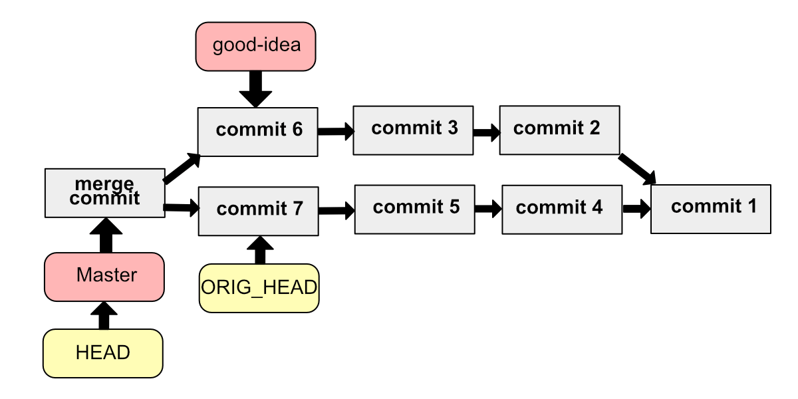
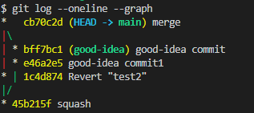
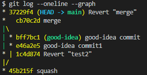

이번 글에서는 병합을 취소하는 명령어들을 배웁니다.
reset을 이용한 병합 취소
병합이 일어난 직후엔 git엔 ORIG_HEAD라는 새로운 참조 commit을 가집니다. 혹여나 실수로 병합을 한 경우에 즉시 병합을 취소할 수 있도록 하기 위함입니다. 
위 명령은 바로 직전 병합을 취소하는 명령입니다. fast-forward병합이나 완전병합에서도 똑같이 먹힙니다.
revert: 없던일로 만들기2
revert명령은 기존의 커밋과 정확히 반대되는 커밋을 만듦니다.
예를 들어 A.txt에 2번 줄을 추가하는 커밋이 있다면 revert는 A.txt에 2번 줄을 빼는 커밋을 만듦니다.
이전 commit들 중 605f5e3를 revert 시켰더니 HEAD에 새로운 commit 1c4d874이 생겼습니다.
사실 기존의 commit들을 reset으로 삭제하거나 변경하는 것 보다는 revert로 기존 commit을 무력화 시키는 것이 history관리 측에서 더 좋습니다. 혼자하는 프로젝트가 아니라 팀원들이 함께하는 프로젝트라면 더더욱 master 브랜치의 commit은 되도록 건들이지 않고 revert로 무력화만 시키는 것을 추천드립니다. 공유할 브랜치의 history를 바꿔버리면 팀원들에게 혼란만 일으킵니다.
revert를 이용한 병합 취소
병합 commit이 있다면(완전 병합으로 병합된 경우) revert를 이용해 쉽게 병합을 취소할 수 있습니다. 이때 --mainline 옵션으로 어느 브랜치를 남길지 결정할 수 있습니다.
|
|
위 명령은 commit들을 그래프로 보여줘 어느 commit이 병합 commit인지 알 수 있게 해줍니다.

혹은 git log --merges로 merge commit만 모아볼 수도 있습니다.
|
|
이제 merge를 revert 해봅시다.
위 그림에서 직선인 왼쪽 그래프가 1번 라인, 오른쪽 그래프가 2번 라인이 됩니다. revert하면서 1번 라인을 남길지 2번 라인을 남길지 결정하면 됩니다.

revert도 마찬가지로 충돌이 일어날 수 있습니다. 당황할 것 없이 merge할때 처럼 충돌을 해결하고 git revert --continue 해주시면 됩니다.
혹은 revert를 중단하고 싶다면 git revert --abort해주시면 됩니다.
연속된 commit을 revert 하기
연속된 commit들을 revert하려 한다면 한번에 revert해줄 수 있습니다.
위 명령은 여러 연속된 commit을 revert하지만 하나의 commit만 생성되므로 history를 더 깔끔하게 관리할 수 있습니다.
마치며
다음 글에선 원격저장소의 연결을 관리하는 명령들에 대해 알아보겠습니다.